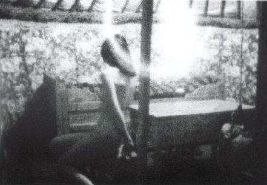
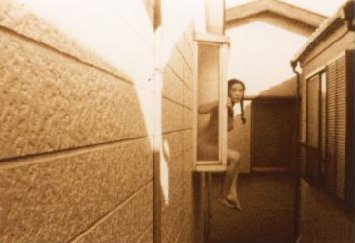

presents

MONGOLIAN PATY
Manjome Jun (Colour, 16mm {8mm}, 19mins, 1996, JAPAN [No Dialogue])
CREOSOTE
Eric Saks (B/W, Video, 42mins, 1997, USA [English Language])

MOMOIRO BEBIIOIRU/PEACH BABY OIL
Wada Junko (Colour, Video {8mm}, 16mins, 1995, JAPAN [Japanese with English subtitles])
A BIT BITTER
Jung Ji-Woo (Colour, Video {16mm},14mins, 1996, KOREA [Korean with English subtitles])
BABY HOME
David Woods (B/W, Video {16mm}, 30mins, 1997, UK [No Dialogue])
TOTAL TIME: 121mins
Below are descriptions of the work to be shown in January's programme. Following this, is a description of EIGA ARTS for filmmakers considering sending their work. I will endeavour to forward/loan preview tapes to similar film/video groups within Japan for possible screening/distibution if the filmmaker wishes. Arrangements should be made personally with me, Joss Winn.
MONGOLIAN PATY
Grand Prize Winner at the 1997 IMAGE FORUM FESTIVAL, Japan.
"Mongolian Impressions." Shooting for this film was done in July, 1995 in Mongolia (the Southern Gobi and elsewhere). Besides conventional shooting, I also used single-frame shots and manually advanced time exposures. The film was edited and completed in September 1996." (Manjome Jun)
At first, this film seems like a simple one, constructed out of a series of long one-shot takes, but the second half is shot with a manual shutter release that subtly alters the shooting speed. This form of shooting makes one think, for example, of the changing speed of hand movements during a musical recital. The effect of this style is a transfiguration of Mongolia's natural wonders into a personified landscape, and a humorous portrayal of things moving ever so slightly (flowers, clouds, animals, exercising women). The title 'Paty' is a variation of "Party"; by leaving out one letter and by recording the title in a personalised style, the director claims a broad array of meanings becomes possible. This is a piece in the director's series "Film as Dance." (IMAGE FORUM FESTIVAL Catalogue 1997)
CREOSOTE
"CREOSOTE combines two analogous stories into a unique vision of individuality, and modern spirituality. The true story of Jared Negrete, a young boy who was lost on a Boy Scout camping trip and never found, is embroidered with the life story of St Francis, also known as the 'hippie saint'. The visual style is arresting, and creates a liminal world wherein figurative representations fall away into hallucinatory abstractions. CREOSOTE is executed through stop-frame animation and puppetry technniques, reminiscent of graphic religious pamphlets. Told through meditative voice-overs, aleatoric sound design, and Retablo-like intertitles, CREOSOTE presents a visceral religious experience." (Eric Saks)
MOMOIRO BEBIIOIRU (PEACH BABY OIL)
Grand Prize Winner at the 1996 IMAGE FORUM FESTIVAL, Japan.
"What should I do when I grow up?" A strange space only several inches above my one room apartment. Our twenty year old heroine dreams of staying as a 'girl'...The sweet unreal narration and the provocative, erotic images produce a strange chilling yet enthralling effect on the audience. Wada claims, "[What should I do] When my body, when my pet crocodile, when my one bedroom apartment grows larger? At twenty I was acting like a child at odds with herself, but I was already too old and large." (IMAGE FORUM FESTIVAL catalogue 1996)
A BIT BITTER
Best Film at the Seoul Short Film Festival, 1996.
"This film depicts the crushing psychological fatigue a housewife experiences in her everyday life in a working class household. The husband is a union activist whose grand liberal ideals are nowhere to be seen in his family life. The wife struggles to make ends meet, over burdened by emotional stress. The narrative style is that of a feature film, while the director succeeds in conveying an actual realism." (YAMAGATA INTERNATIONAL DOCUMENTARY FILM FESTIVAL catalogue 1997)
"Viewing A BIT BITTER requires a contextual understanding of Korea in the 80s. It was a time dictatorship of the military regime was at it's utmost peak, hence an age of repression especially for the young generation. Those youths, now aging and wearied in the diverted political climate of the 90s, are the ones this film seeks to look into. I want to talk about our common everyday lives. I especially wanted to talk about the people who are living hard lives through the 90s with their children named after 'democracy' or 'freedom' or 'liberty'. Having lived through the late 80s, I greatly admire and respect their lives while at the same time feel deep pain in my heart for them." (Jung Ji-Woo)
BABY HOME
"BABY HOME is an experimental documentary, shot in black & white 16mm, lasting 30 minutes. It employs only still images which "document" the last thirty minutes of a home birth. The whole film was shot on a rostrum camera (animation stand), where the 72 still images (from the only two 35mm rolls of still film I shot at the time of the birth) are "explored", and synchronized with the unedited sound track of the "event". (The only words discernable, at one moment, are "baby home" - spoken by a sibling child of the new baby)."
"On a formal level the fact that the sound track is uncut, and each change of still picture on the screen is synchronized with the "click-whirr" of the still camera, leads the audience to realize that the film is a documentary phenomenon which is both new in form and which does not hide the minimal intervention involved. The film is made to support the home birth movement, which is opposed to the unnecessary hi-tech and interventionist medicalization which has come to be the condition in most hospital births. The strategy with which the film is constructed attempts to mirror the naturalness of the birth. Unlike 25/25 fps live-action film / video footage of the "event", which cannot help but attempt to pretend that the audience is involved, the audience in baby home is forced to watch and wait, watch and explore the frame, and wait for the next frame-change. BABY HOME thus seems to force an active role on the audience (unlike live-action film) to explore, contemplate, empathize and think their own thoughts. I find it very interesting that the film, an experimental documentary, seems to work with audiences in the both the avant-garde and with those focussed on birthing politics. (David Woods)
EIGA ARTS - January 30th. 6.30-9.30pm
Donations welcome!